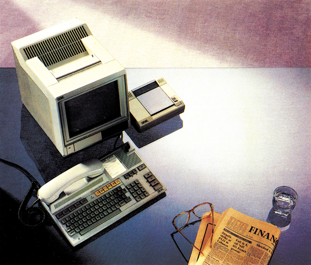
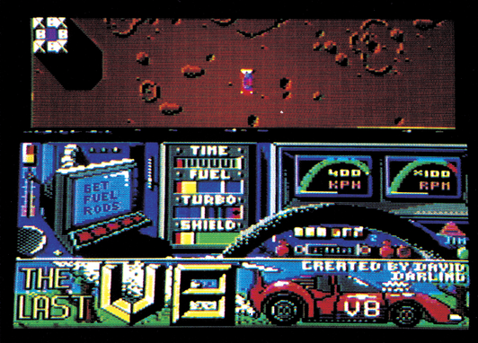
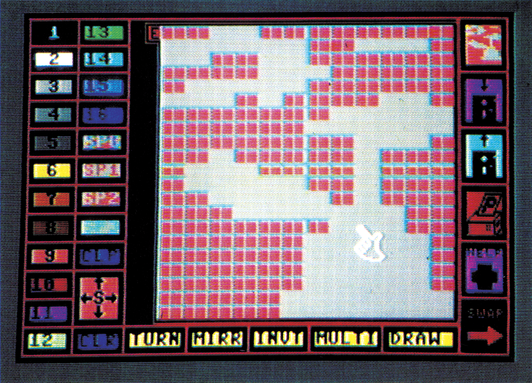
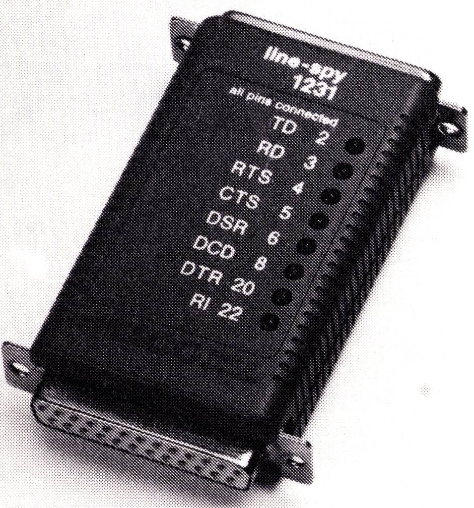

Aktuelles
NEUES CP/M-MODUL
CP/M lebt! Nachdem das Original-CP/M-Modul von Commodore nicht mehr gebaut wird, aber Top-Programme wie Wordstar, dBase II und Multiplan preiswert im 1541-Format erhältlich sind, ist eine Bedarfslücke entstanden. Diese Lücke soll das neue CP/M-Modul von Roßmöller schließen. Das Modul soll mit jedem C 64 oder C 128 zusammenarbeiten und mit einer wesentlich höheren Taktrate und damit bis zu doppelter Geschwindigkeit als das Original-Modul arbeiten. Laut Auskunft des Herstellers soll das Booten des CP/M-Systems entfallen, da das System auf der Karte auf einem EPROM gespeichert ist. Auch der freie Speicherplatz soll sich auf56 KByte, beim C 128 sogar auf 100 KByte vergrößern. Ein Preis für das CP/M-Modul steht noch nicht fest.
Vom gleichen Hersteller gibt es nun auch ein Shugart-Bus-Modul, mit dem sich beliebige 5%- oder 31-Zoll-Laufwerke nach Shugart-Norm (wird zum Beispiel von IBM verwendet) an den C 64 anschließen lassen. Der Hersteller kündigt für diese Laufwerke eine um bis zu 50fach gesteigerte Aufzeichnungs- und Ladegeschwindigkeit gegenüber der 1541 an. Das Shugart-Bus-Interface kostet 498 Mark.
(aw)Info: Roßmöller GmbH, Maxstr. 50-52, 5300 Bonn 1
PREISSENSATION
Für einige Umwälzungen auf dem Computer-Markt könnte die Kaufhof AG sorgen. In ihrem neuesten Angebot wird für ein komplettes Computersystem, bestehend aus einem Plus/4 und einer Floppy 1551, geworben, das alles in allem nur 499 Mark kosten soll.
Auf unsere Anfrage teilte uns die Kaufhof AG Anfang Juni in München mit, daß die angebotenen Geräte im Lager vorhanden sind und zum sofortigen Verkauf ausliegen.
(ks)NACHTRAG ZU DEN »FLIEGENDEN HOLLÄNDERN«
Zu unserem Testbericht der Module »Power Cartridge« und »Final Cartridge« haben sich noch einige Änderungen ergeben. So kann das.»Power Cartridge« jetzt auch auf dem MPS 802-Drucker Hardcopies ausgeben. Das Speichern auf Diskette wird von der »Power Cartridge« nicht beschleunigt.
Inder »Final Cartridge« wurde nachträglich der vorhandene Maschinensprache-Monitor erweitert, so daß man jetzt auch den Speicher eines angeschlossenen Floppy-Laufwerks untersuchen und gegebenenfalls verändern kann.
(bs)Power Cartridge: Lindy Elektronik, Postfach 1428, 6800 Mannheim 1
Final Cartridge: Medica, Kopmanshof 69, 3250 Hameln 1
Preis: je 149 Mark.
BTX-TELEFON VON LOEWE
Das Btx-Telefon »BTT 510« von Loewe erhielt nun die FTZ-Zulassung der Deutschen Bundespost. Btx-Ielefone sind eine Kombination aus Komfort-Telefon und Btx-Terminal. Die Post will dieses Jahr noch 100000 Btx-Telefone verschiedener Hersteller kaufen. Parallel dazu will Loewe das BIT 510 über Händler verkaufen oder vermieten. Der Kaufpreis soll bei 4100 Mark liegen, die Miete etwa 100 Mark pro Monat.

Info: Loewe Opta, Postfach 220, 8640 Kronach, Tel. 09261/991
SPIELE FÜR DEN C 128
Der bekannte Billigspiele-Produzent Mastertronic bricht eine Lanze für den Commodore 128: Vor kurzem erschienen die ersten beiden Spiele für den 128-Modus, die somit nicht im 64-Modus oder auf einem C 64 lauffähig sind. Es handelt sich dabei um »Kickstart«, ein Motorradrennen für ein oder zwei Spieler und um »The Last V&« (siehe auch Bild), ein schwieriges Geschicklichkeitsspiel, dessen C 64-Version wir in der Ausgabe 4/86 testeten. Besonders gefallen hat uns der extrem niedrige Preis der beiden Spiele. Auf Diskette kosten sie jeweils nur 30 Mark, was die Programme wohl zur preiswertesten derzeit erhältlichen C 128-Software machen dürfte.

Info: Mastertronic, Kaiser-Otto-Weg 18, 4770 Soest
NEUER SPRITE-EDITOR
Sprite Light, wie sich der neue Editor nennt, ist ein Programm, das die Herzen der Grafik-Fans höher schlagen läßt. Alle zur Verfügung stehenden Funktionen lassen sich direkt mit Hilfe einer komfortablen Benutzeroberfläche anwählen. Zu diesen Funktionen gehören sowohl die Farbgebungen der Multicolor-Sprites wie aber auch weitergehende Funktionen zum Drehen. Invertieren oder Spiegeln. Auch das Scrollen in alle vier Himmelsrichtungen ist für Sprite Light kein Problem. Alles was man benötigt, ist neben dem C 64 ein Diskettenlaufwerk und ein Joystick.

Ist ein Drucker vorhanden, lassen sich neben den Sprite-Daten auch die jeweils aktuellen Sprites in Form einer LoRes-Grafik ausdrucken. Wenn Sie sich für Sprite-Animation interessieren, können Sie in einem zweiten Menüfeld sogenannte Sprite-Pics entwerfen. Bei ihnen handeltessich um kleine HiRes-Bilder, die aus mehreren einzelnen Sprites bestehen. Sind mehrere Sprite-Pics entworfen, kann man sie sofort hintereinander ablaufen lassen. Dadurch entsteht ein fantastischer Zeichentrickeffekt.
(ah)Info: W. Zunker & U. Hassepaß, 1000 Berlin 62, Postfach 620 726, Preis: 89 Mark
SCHNITTSTELLEN-TESTER
Zur Fehlersuche bei V.24-Schnittstellen dient der »Line-Spy« von Misco. Der Tester überwacht die V.24-Leitungen 2 (TD), 3(RD), 4 (RTS), 5 (CTS), 6 (DSR), 8 (DCD), 20 (DTR), 22 (RD). Über LEDs werden die Zustände der Leitungen angezeigt. Leuchtet die LED, ist die entsprechende RS232-Leitung aktiv. Der »Line-Spy« kostet 149 Mark.

Info: Misco GmbH, Nordendstr. 72-74, 6082 Mörfelden-Walldorf, Tel. (06105) 4010